sumário
Experimentos
Bússola_Gestão Hospitalarparceiros: 3PJTC do Núcleo de Volta Redonda, 2PJTCS da Região Metropolitana, CAO Saúde, AWS e NTT BrasilA plataforma se propõe a trazer transparência aos dados da gestão hospitalar e orientar decisões de gestão e controle. Para isso, o
Bússola_Gestão Hospitalar priorizou temas críticos, coletou bases de dados, e desenvolveu visualizações de dados com alertas referentes a indicadores da gestão pública de hospitais do SUS. Está em fase de aprovação pelo Fórum Permanente de Planejamento e Gestão (FPPG) para contratação do desenvolvimento da plataforma.
ImpactaO
Impacta será o programa de inovação aberta do MPRJ. Por meio dele, a instituição poderá especificar desafios prioritários para a melhoria da sua atuação e usar da inteligência coletiva para solucioná-los, chamando a sociedade - academia, empresas, startups etc. - para cocriar soluções inovadoras. O programa está na fase final da contratação do parceiro que irá gerenciá-lo.
FagulhaO
programa busca atingir dois dos objetivos estratégicos do Inova_MPRJ: difundir a cultura de inovação no setor público e promover o trabalho em rede. Por meio dele, o Laboratório convida agentes internos e externos ao MPRJ para trabalhar em colaboração. Os participantes aprendem novos métodos, técnicas e ferramentas colocando a mão na massa. As primeiras experiências incluíram integrantes do MPRJ, estudantes do ensino médio e profissionais do setor público. O primeiro ciclo oficial do programa, exclusivo para integrantes do MPRJ, está previsto para janeiro de 2020.
Sínteseparceiro proponente: CAO ProcuradoriasO projeto concentra-se no desenvolvimento de estratégia para testes, doação e/ou desenvolvimento em parceria de ferramentas de inteligência artificial para identificação de questões de direito repetitivas em processos judiciais. Uma
chamada pública para teste de soluções está prevista para o primeiro semestre de 2021.
SimplificaParceiros: 1PJTC do Núcleo Macaé, 3PJTC do Núcleo Volta Redonda, e com o (011).labO
Projeto Simplifica tem como objetivo experimentar novos formatos para documentos produzidos pelo MPRJ, em linha com o movimento de Linguagem Simples. Há espaço para reduzir tamanho, simplificar linguagem e incorporar recursos alternativos ao texto. A partir de pesquisa com 166 integrantes da instituição, a equipe do Inova_MPRJ e as promotorias parceiras definiram as Ações Civis Públicas (ACPs) como documento prioritário. Com o apoio do (011).Lab, as promotorias realizaram diagnóstico dos documentos antigos e agora estão se dedicando a reescrever ACPs de acordo com as diretrizes da Linguagem Simples e da ciência de dados.
Jornada do Óbito
Parceiro proponente: FTCOVID-19/MPRJ
O projeto Jornada do Óbito surgiu em meio ao contexto da pandemia da COVID-19 no Estado do Rio de Janeiro. O Inova_MPRJ elaborou um fluxo mapeando a jornada de corpos após o óbito durante a pandemia. O material englobou diferentes pontos de partida, compreendendo óbitos em casa, em via pública ou em unidade de saúde, e assim pôde identificar os principais pontos de atenção e atores envolvidos no processo de manejo.
Argos
O projeto Argos pretende utilizar a tecnologia para promover um maior envolvimento de cidadãos interessados em colaborar com o MPRJ na constatação de fatos relevantes para sua atuação. Após pesquisa de soluções existentes, a equipe do Inova_MPRJ finalizou a minuta do Plano de Contração de uma licença e/ou serviço de desenvolvimento de software que estabeleça mecanismo e canal de participação ativa para a sociedade. O documento será submetido a consulta pública no primeiro semestre de 2021.
Antivírus
Parceiro proponente: FTCOVID-19/MPRJNo início da pandemia causada pelo novo coronavírus, o Inova_MPRJ uniu forças com o CENPE e o GATE para desenhar, orientar e priorizar a implementação de linhas de atuação estratégicas e emergenciais. O objetivo era que o MPRJ pudesse atuar de forma mais eficiente em um cenário ainda incerto e de crise. Por meio da abordagem do design, os órgãos trabalharam de forma integrada na definição das principais linhas de atuação e no mapeamento dos indicadores críticos, fontes de informação e iniciativas promissoras no combate à COVID-19. O trabalho foi sistematizado em um
relatório e entregue à FT-COVID-19/MPRJ.
Bússola_Baía de Guanabaraparceiro proponente: GAEMAO projeto trabalhou com o monitoramento de obras de despoluição da Bacia Hidrográfica da Baía de Guanabara. No seu
primeiro ciclo de trabalho, ele priorizou e coletou bancos de dados referentes a indicadores críticos para a fiscalização do cumprimento de dois acordos firmados pelo MPRJ para obras de saneamento. Em um próximo ciclo, o foco estará no processamento dos dados e na criação do painel gerencial. Assim como os outros projetos Bússola, aguarda aprovação do FPPG para contratação de desenvolvimento para a plataforma.
Robotiza.AI_OuvidoriaParceiro: Ouvidoria do MPRJPara gerar inteligência a partir das manifestações que o MPRJ recebe em sua ouvidoria, o Laboratório criou o projeto Robotiza.AI_Ouvidoria. A iniciativa se propõe a automatizar os encaminhamentos de denúncias aos Centros de Apoio Operacional das promotorias de justiça de tutela coletiva, utilizando ferramentas de inteligência artificial e processamento de linguagem natural (PLN). O protótipo de classificador de temas e subtemas das denúncias está disponível
aqui.
Robotiza.AI_OuvidoriaParceiro: Ouvidoria do MPRJPara gerar inteligência a partir das manifestações que o MPRJ recebe em sua ouvidoria, o Laboratório criou o projeto Robotiza.AI_Ouvidoria. A iniciativa se propõe a automatizar os encaminhamentos de denúncias aos Centros de Apoio Operacional das promotorias de justiça de tutela coletiva, utilizando ferramentas de inteligência artificial e processamento de linguagem natural (PLN). O protótipo de classificador de temas e subtemas das denúncias está disponível
aqui.
Robotiza.AI_Promotoria
O Robotiza.AI_Promotoria tem por objetivo facilitar o trabalho das promotorias de justiça de tutela coletiva, indicando similaridades entre procedimentos extrajudiciais a partir de modelos de inteligência artificial. Na primeira fase do projeto, os modelos tentarão estimar a similaridade entre as notícias de fato encaminhadas pela Ouvidoria e os objetos dos procedimentos em andamento nos órgãos de execução. Atualmente o projeto se encontra na fase de coleta e estruturação dos dados.
Bússola_Sistema Prisionalparceiros proponentes: PJTC de Sistema Prisional e Direitos HumanoO
projeto se dedicou à criação de um painel de transparência e gestão de indicadores para a atuação em relação ao sistema prisional, com alertas e modelos de documentos jurídicos. O Laboratório conduziu dois testes com promotorias para identificar pontos de melhoria e validar a visão de negócio do protótipo clicável. Aguarda aprovação do projeto pelo Fórum Permanente de Planejamento e Gestão (FPPG) para contratação do desenvolvimento da plataforma.
Mais uma reunião?Parceiro proponente: GATEO Inova_MPRJ se uniu ao GATE para pensar e construir alternativas que evitassem reuniões desnecessárias e comunicassem boas práticas para melhorar a produtividade dos encontros essenciais. O material pode ser acessado na
página do projeto.
 
